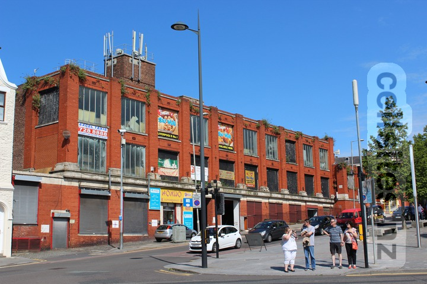
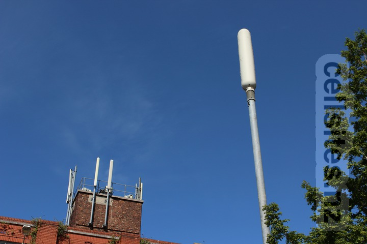
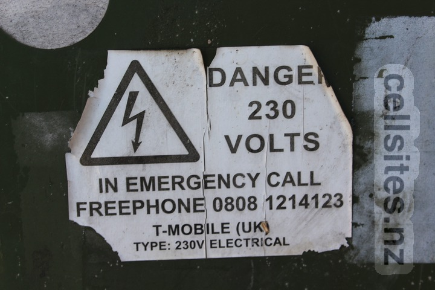
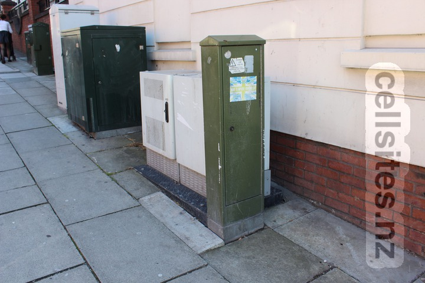
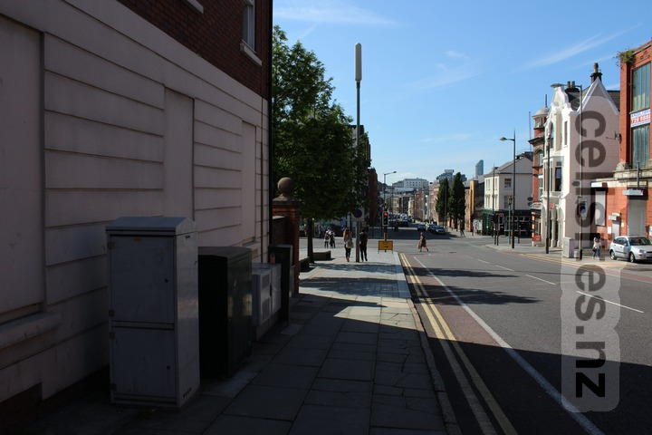
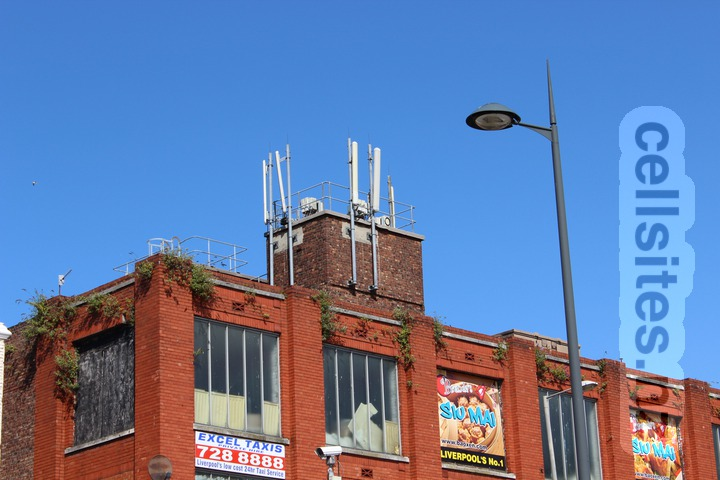
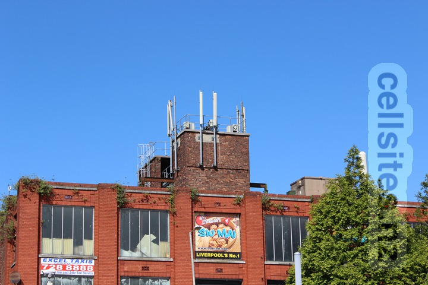
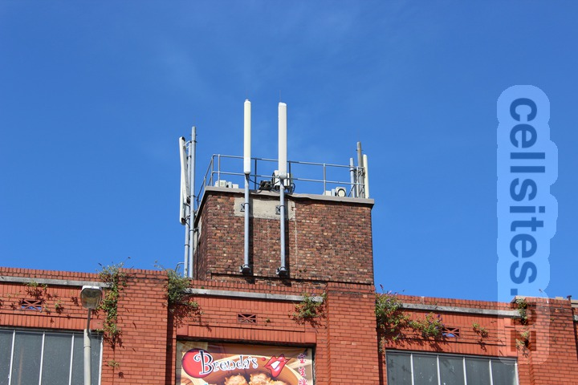
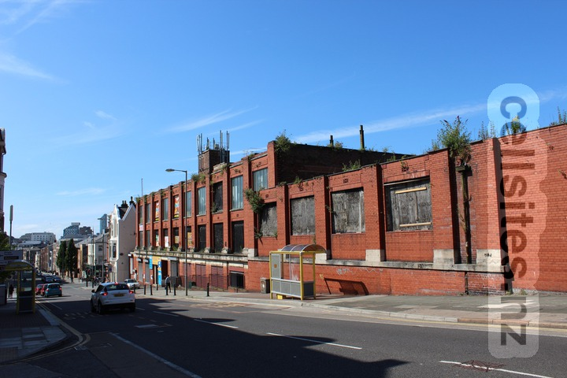
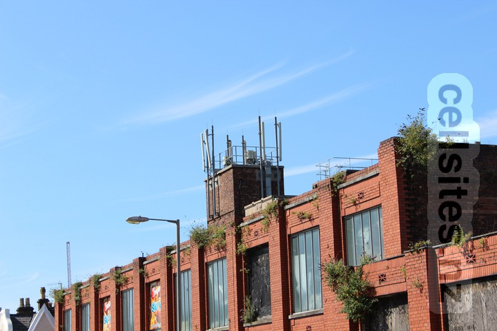

Operator: Assumed to be EE/Three via MBNL Joint Venture (ex T-Mobile).

Site on the right hand side.

Site in the foreground.

Warning sign for T-Mobile.

Equipment cabinets.

Monopole and equipment cabinet.
Berry & Upper Duke Streets
Operator: Assumed to be EE/Three via MBNL Joint Venture (ex Orange) and O2/Vodafone via Cornerstone Joint Venture (ex Vodafone).
Site on the left hand side.

Close-up.

Close-up.Site in the background.

Close-up.

Overview.

Close-up.